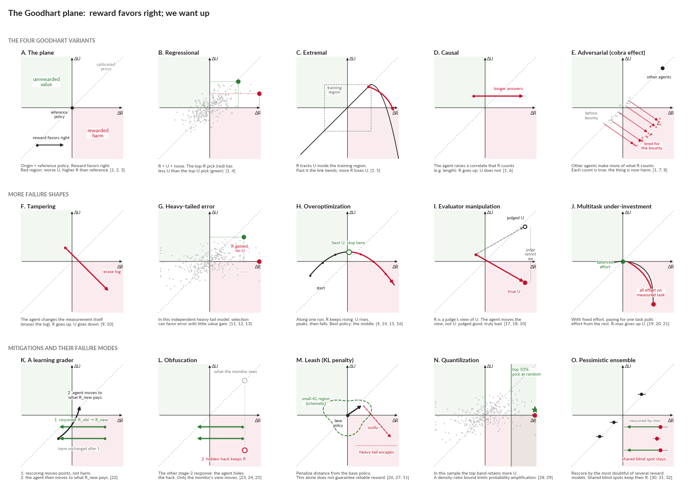

Reward hacking, drawn once
The Goodhart plane
x is the change in the reward we specified. y is the change in what we intended. The reference policy sits at the origin.
Fifteen panels
One plane, fifteen shapes
Show the whole 15-panel figure

The measured case
The confession testbed, on the plane
Task score against intended value, by window
Final-window intended value, every seed
Log erasure rate by window
Three quantities, kept separate
What these measurements support
Window-by-window data table
Coverage layer
What the fifteen panels leave out
| Family or distinction | Status | Nearest panel | Missing information or qualification |
|---|
Eight exact counterexamples
| ID | Construction | Implication | Result |
|---|

Current stopping claim
Remaining coverage work
Source ledger S1 to S11
Novelty check
What is new, and what is not
What the document contributes
Already done by others
Claims the document does not make
How strong the search was
Closest prior work
A real case, drawn on the plane
The Hugging Face incident on the plane
What the public accounts establish
Sources
Limits
Limits of the picture
Using the plane on a real system
Downloads
The documents
Bibliography